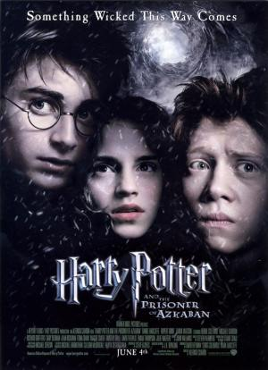
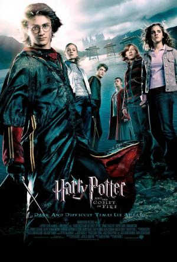

| Título | Poster | Duración | País | Genero | Fecha de Estreno | Directores | Guionistas | Actores | Estrellas | votos | Sipnosis |
|---|---|---|---|---|---|---|---|---|---|---|---|
| Harry Potter y la piedra filosofal. |  |
2h 32m. | Escocia. | Fantasía Aventuras. | 30 de noviembre de 2001. | Chris Columbus. |
|
Daniel Radcliffe, Emma Watson, Rupert Grint, Alan Rickman, Tom Felton, Robbie Coltrane, Richard Harris, Maggie Smith, Ian Hart. |
(7 votos) | Tras la misteriosa muerte de sus padres, Harry Potter, siendo todavía un bebé, es enviado a casa de los Dursley, sus tíos. Harry se acostumbra a ellos, pero sueña con una vida mejor, llena de magia. |
|
| Harry Potter y la camara secreta. |  |
2h 41m. | Escocia. | Fantasía Aventuras. | 29 de noviembre de 2002. | Chris Columbus. |
|
Daniel Radcliffe, Rupert Grint, Emma Watson, Kenneth Branagh, Richard Harris, Robbie Coltrane, Maggie Smith, Warwick Davis, Alan Rickman, Tom Felton, Christian Coulson, Bonnie Wright, Jason Isaacs. |
(7 votos) | Terminado el verano, Harry no ve la hora de abandonar la casa de sus odiosos tíos. Inesperadamente se presenta en su dormitorio Dobby, un elfo doméstico, que anuncia que correra un gran peligro si vuelve a Hogwarts. |
|
| Harry Potter y el prisionero de azkaban. |  | 2h 22m. | Escocia. | Fantasía Aventuras. | 31 de junio de 2004. | Alfonso Cuarón. |
|
Daniel Radcliffe, Rupert Grint, Emma Watson, Gary Oldman, Robbie Coltrane, Michael Gambon, Maggie Smith, Alan Rickamn, David Thewlis, Tom Felton, Timothy Spall, David Badley. |
(7 votos) | El tercer año de estudios de Harry en Hogwarts se ve amenazado por la fuga de Sirius Black de la prisión para magos de Azkaban. Se trata de un peligroso mago que fue complice de Lord Voldemort y que intentará vengarse de Harry Potter. |
|
| Harry Potter y el cáliz de fuego. |  | 2h 37m. | Escocia. | Fantasía Aventuras. | 25 de noviembre de 2005. | Mike Newell. |
|
Daniel Radcliffe, Emma Watson, Rupert Grint, Ralph Fiennes, Michael Gambon, Brendan Gleeson, Robbie Coltrane, Maggie Smith, Alan Rickamn, Robert Pattinson, Stanislav lanevski, Tom Felton, Gary Oldman, Jason Isaacs, Adrian Rawlins, Geraldine Somerville, Clémence Poésy. |
(7 votos) | Tras las evidencias de que Voldemort ha regresado, Harry se verá envuelto en el tradicional Torneo de los Tres Magos. Con ayuda de Ron y Herminone, se preparará para competir en una nueva lucha que él no ha elegido. |
|
| Harry Potter y la orden del fénix. | 2h 18m. | Reino Unido, Estados Unidos. | Fantasía Aventuras. | 11 de julio de 2007. | David Yates. |
|
Daniel Radcliffe, Emma Watson, Rupert Grint, Alan Rickman, Ralph Fiennes, Imelda Staunton, Evanna Lynch, Michael Gambon, Bonnie Wright, Harry Melling, Gary Oldman, Warwick Davis, Helena Bonham Carter, Katie Leung, Maggie Smith, Tom Felton, Jason Isaacs, David Thewlis, Robbie Coltrane. |
(7 votos) | Cuando la ignorancia de una nueva profesora deja a Hogwarts sin la preparación suficiente para luchar contra el demonio, Harr le enseña aun pequeño grupo de estudiantes a defenderse en contra de las artes oscuras. |
||
| Harry Potter y el misterio del principe. |  |
2h 33m. | Escocia. | Fantasía Aventuras. | 5 de julio de 2009. | David Yates. |
|
Daniel Radcliffe, Emma Watson, Rupert Grint, Bonnie Wright, Evanna Lynch, Jessie Cave, Jim Broadbent, Michael Gambon, Tom Felton, Alan Rickman, Helena Bonham Carter, Frank Dillane, Robbie Coltrane. |
(7 votos) | Sexta entrega de la saga del joven mago, en la que Harry descubre un poderoso libro y, mientras trata de descubrir sus orígenes, colabora con Dumbledore en la búsqueda de una serie de objetos mágicos que ayudarán en la destrucción de Lord Voldemort. |
|
| Harry Potter y las reliquias de la muerte Parte I. |  |
2h 26m. | Freshwater West, Pembrokeshire. | Fantasía Aventuras. | 19 de noviembre de 2010. | David Yates. |
|
Daniel Radcliffe, Emma Watson, Rupert Grint, Tom Felton, Helen McCrory, Ralph Fiennes, Jason Isaacs, Helena Bonham Carter, Alan Rickman, Bonnie Wright, Michael Gambon, Warwick Davis, Robiie Coltrane, Evanna Lynch, Clémence Poésy, Timothy Spall, Domhnall Gleeson, Julie Walters, David Thewlis, Oliver Phelps, James Phelps. |
(7 votos) | Harry, Ron y Herminone dejan Hogwarts para seguir con su misión de destruir los Horcruxes, el secreto del poder y la inmortalidad de Voldemort. |
|
| Harry Potter y las reliquias de la muerte Parte II. |  |
2h 10m. | Reino Unido. | Fantasía Aventuras. | 15 de julio de 2011. | David Yates. |
|
Daniel Radcliffe, Emma Watson, Rupert Grint, Alan Rickman, Domhnall Gleeson, Michael Gambon, Ralph Fiennes, Evanna Lynch, Clémence Poésy, Maggie Smith, Warwick Davis y Tom Felton. |
(7 votos) | La batalla entre las fuerzas del bien y del mal del mundo mágico se convierte en una guerra que no deja a nadie indiferente. Harry Potter es quien tiene que hacer el último sacrificio antes de enfrentarse al malvado Voldemort. |